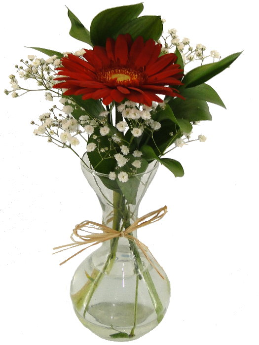
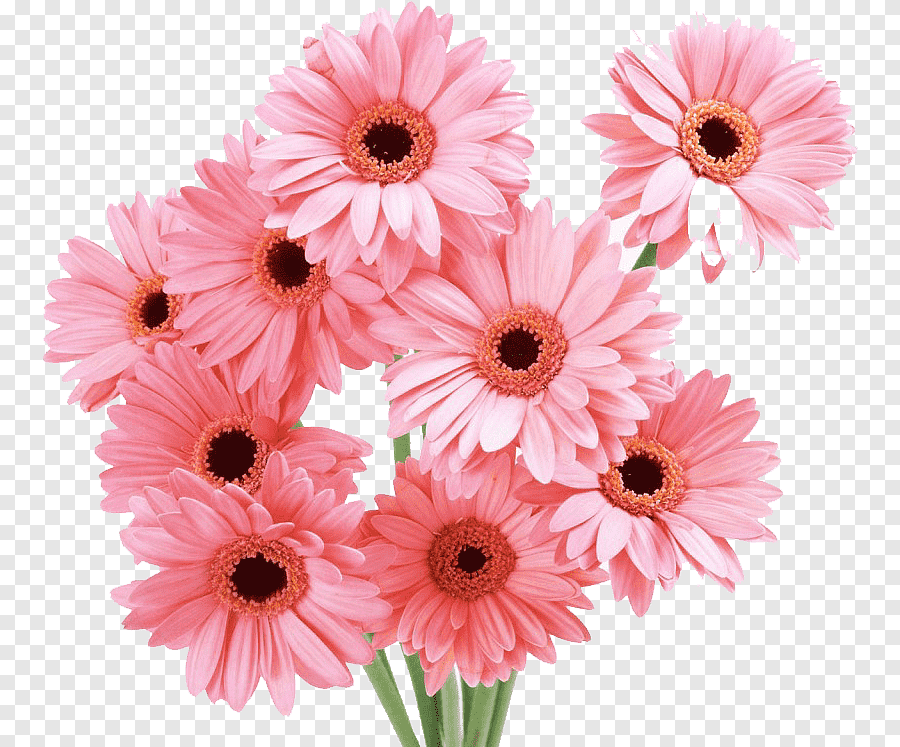
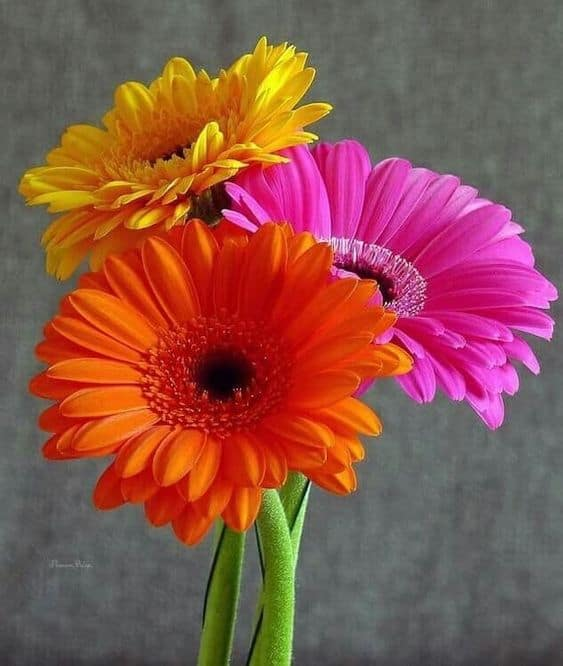

As géberas podem ter vários significados, um mais lindo que o outro.

Amor Romântico: Opte por tons de vermelho ou rosa para expressar sentimentos românticos.

Transmitindo carinho e gratidão, a Gérbera rosa é perfeita para expressar afeto e reconhecimento.

Três gérberas significam "Eu Te Amo" perteito para casais apaixonados.